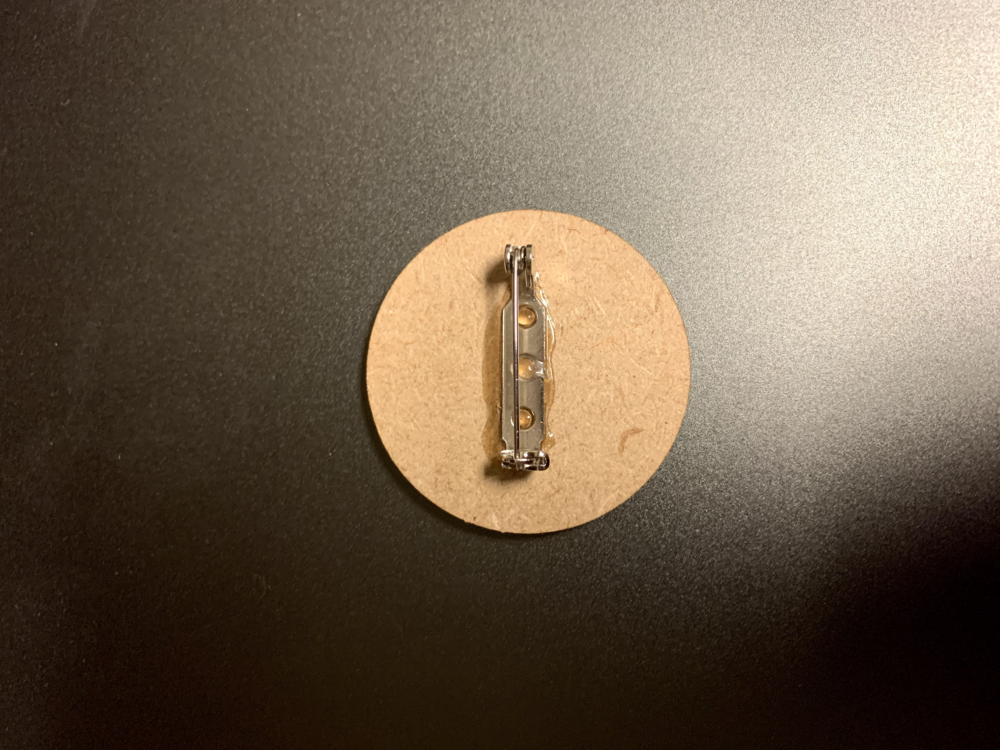
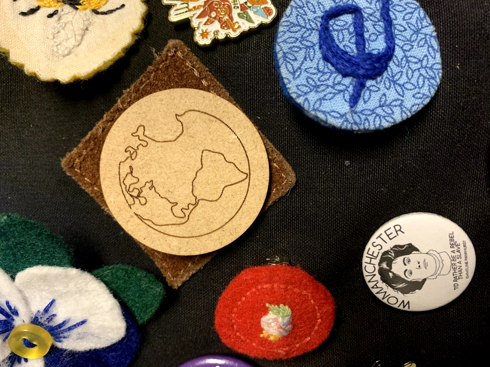

For the last year I have been collecting pins. I first started by embroidering my own pins. Then when I was in London at the beginning of the year I collected a pin at a lot of the places we went. When I was thinking about what to laser cut, I thought it would be fun to laser cut a pin. I decided to engrave a line drawing of earth on the pin because it would represent that my pin collection comes from all over the world. Or at least I hope it will at some point… right now I only have pins from Utah and England.
I created a google drawing where I uploaded the file of my earth line drawing and then added a circle around it. I then saved that as an .svg file and sent it to the glowforge printer. I cut on medium particle board which is 3mm thick. The glowforge took around three minutes to cut it. I used E6000 glue to glue the pin onto the laser cut piece.
 The pin worked just like I thought it would. The only problem is I think I am running out of space on my backpack!
Using the glowforge laser cutter was straightforward and easy. The only difficult part was the way I created my svg file separated into three pieces when put into the glowforge app: the earth drawing, the circle, and a square background. So I just had to hide the background while printing. Another issue when working the week was figuring out how to do a command line on my chromebook. I never figured it out. There should be a way to do Linux on chromebooks or to use GitHub with GoogleDrive, I just need to do more digging.